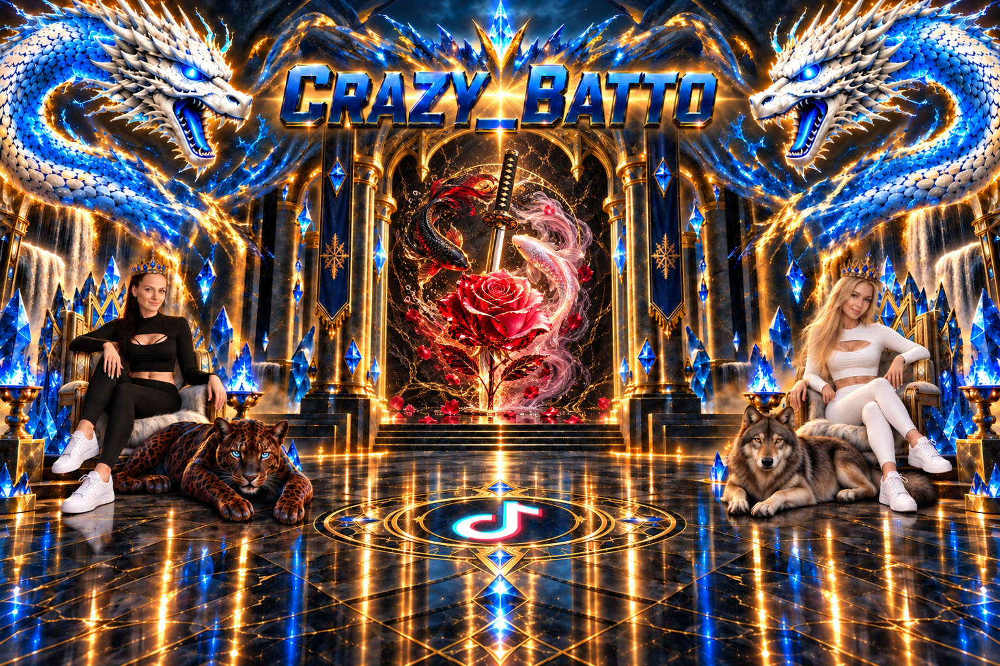

Multi-Chat
Alle Chats in einer Ansicht – nie wieder etwas verpassen.
Moderation
Behalte die Kontrolle über deine Community.
| Zeit | Name | Aktion | Grund | Letzte Nachricht | Durch | Plattform | Ergebnis |
|---|
Twitch-Hologramm
Chat als stilvolles Hologramm für OBS.
Co-Host
Flexible Gast-Anordnung für TikTok und Twitch.
Plattformen & Verbindungen
Lokale Bridges, CNG-Overlays und Direktverbindungen.
Moderation
Plattformgetrennte Moderatoren, Stummschaltungen, Blockierungen und Verlauf.
Chat-Filter
Begriffe, Plattformen und automatische Aktionen.
Twitch-Hologramm
Schrift, Farben, Glow und OBS-Overlay.
Co-Host
Plätze, Quellen und OBS-Ausgabe.
Plattformen & Verbindungen
TikFinity lokal, AxelChat, Twitch, YouTube, CNG und OBS.
Commands
Eigene Chat-Befehle für alle eingehenden Plattformen mit Multi-Actions.
Auto-Broadcast
Automatische Chat-/Overlay-Nachrichten, inklusive CNG-Local-Overlay.
Hotkeys / Multi-Action
Windows-Hotkeys und sequenzielle Aktionen.
Events
Gift, Follow, Like, Share, Subscribe und eigene Events mit Multi-Actions.
Medien
Eigene MP3, WAV, MP4, WebM, GIF und Bilder.
Medien-Pools
Medien auswählen, Reihenfolge, Zufall, Lautstärke und Wiederholung konfigurieren.
TTS
Stimme, verbundenes Ausgabegerät und Lautstärke für Chat und Automationen.
Discord
Webhook-Benachrichtigungen aus Commands und Events.
Backups
Konfiguration sichern, exportieren und wiederherstellen.
Einstellungen
Allgemein, Oberfläche, Synchronisation, Zusatz-Einstellungen und Info.